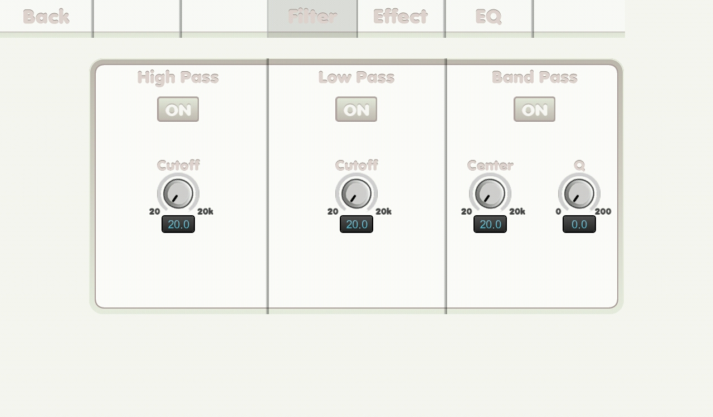

{% include JB/setup %}
Filter screen

- Back tab: back to previous main screen.
- Effect tab: read you to effect screen.
- EQ tab: read you to eq screen.
- ON button: to turn the filter on.
- Cutoff knob. cutoff frequency.
- Center knob. center frequency.
- Q knob: q